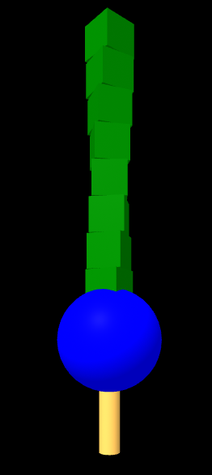
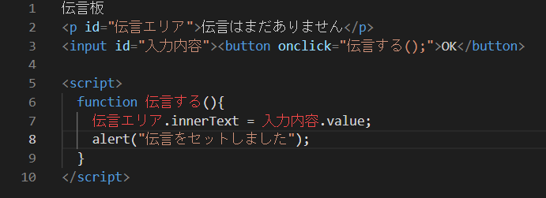

第3週目
3-1 JavaScript体験：VR空間を作る

VR空間
1.内容
A-Frameを用いてVR空間に立体を作成した。物体の大きさや色、角度、位置などの
様々な要素を調整することができた。
2.感想
何もない空間に立体的な物体を作ることができることはすごいことだと思った。
3-1 JavaScript体験：伝言プログラムを作る

伝言板
1.内容
3-1と同じくA-Frameを用いて伝言を送信することができるプログラムを作成した。
2.感想
基本的なプログラムだが自分にとってはかなり難しかった。
すべての要素を一字一句正確に入力する必要があるのでとてもイライラした。
3-2 JavaScriptプログラムの３次元空間の体験
1.内容
VRゴーグルを用いて3次元空間の体験を行った。
先程A-Frameにてデフォルトでセットされていた空間で体験を行った。
2.感想
実際に作成した仮想空間で体験ができるのは画期的だと思った。